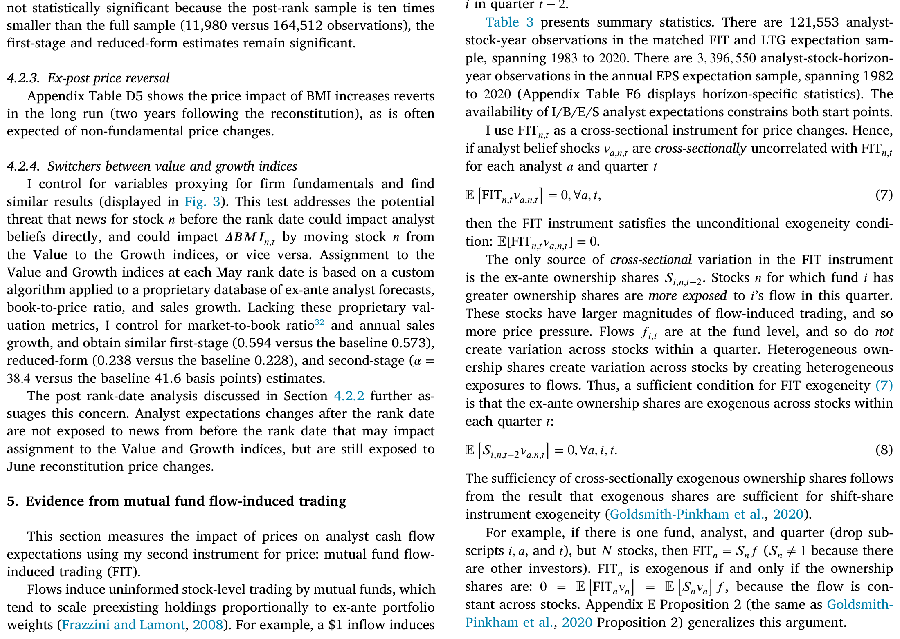
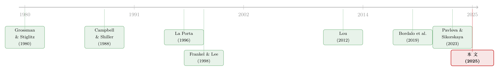

价格会「教」分析师做预测吗？——给理性定价的一次平反
本文读的是 Chaudhry (2025, Journal of Financial Economics)：作者用两个独立的工具变量证明，与现金流消息无关的价格上涨，会反过来抬高分析师的现金流预期——一个外生的 1% 涨价，能把一到四年期 EPS 预期推高 20–40 个基点。这个看似不起眼的「价格→预期」通道，足以把一桩长期被当作「理性定价已死」的铁案，重新翻成悬案。
1 一桩看似铁证如山的「定罪」
先说说这桩公案的来龙去脉。
过去二十年，资产定价里有一派越来越响亮的声音：投资者不是理性的。证据从哪儿来？从分析师的现金流预期里来。研究者长期把股票分析师对盈利的预期，当作投资者信念的「代理变量」（proxy）——这个习惯至少能追到 Malkiel (1970)。而一旦你接受这个代理，麻烦就来了，因为这些预期身上挂着三条「罪状」：
第一，它们和价格走得太近——股价一涨，分析师的现金流预期就跟着往上修。第二，它们的预测误差是可预测的（predictable forecast errors）：今天乐观，明天往往就要失望。第三，它们负向预测未来收益——分析师越乐观的股票，将来跌得越惨。再加上一条旁证：分析师的主观预期收益（subjective expected returns）和价格只有微弱的相关。
这四条放在一起，几乎是给「理性预期」判了死刑。因为在一个投资者理性、贴现率变动（discount rate variation）驱动价格的世界里，本该是另一番景象：预测误差不可预测，现金流预期不能预测收益，而预期收益应当与价格强烈负相关（价格高→未来收益低，这正是贴现率的含义；关于贴现率为何是资产定价的中心议题，可参见《贴现率：资产定价的中心议题》）。
于是主流的解读顺理成章：既然数据长这样，那一定是投资者也抱着和分析师一样有偏的现金流预期，是这些有偏信念扭曲了价格（Bordalo et al., 2019, 2024 这条「诊断性预期」的脉络）。理性定价，出局。
这篇论文要做的，恰恰是替被告翻案。
2 真正关键的一步：把因果掉个头
作者的反击只有一句话，却釜底抽薪：会不会是价格在影响分析师的预期，而不是反过来？
接着，一个自然的问题是——这有什么不一样？如果分析师向价格学习（learn from prices），那么一切就都变了。设想投资者理性、且各自握有关于未来现金流的私人信息（Grossman & Stiglitz, 1980；Hellwig, 1980），价格于是成了一个聚合了私人信息的信号。分析师想预测现金流，理所当然会去看价格、从价格里「读」信息。可问题在于：价格里不只有现金流信息，还掺着贴现率变动。分析师在向价格学习时，会不小心把贴现率的那部分波动，也当成现金流消息吞了进去。
结果呢？分析师的现金流预期里于是混进了贴现率成分——它会预测收益（因为贴现率本就预测收益），它的预期收益和价格只有弱相关（因为分析师把本属于贴现率的变动错记成了现金流）。三条「罪状」，在一个投资者完全理性的世界里，全都自然地长了出来。
这就是全文反复打磨的那一个核心：价格对分析师现金流预期存在因果影响，而这个影响足以把「主观信念数据」和「理性投资者模型」重新调和到一起。
3 识别的难处：一个绕不开的内生性
但口说无凭。要证明「价格→预期」这条因果箭头真实存在、还要量出它有多粗，得跨过一道坎。
把问题写成方程组（论文 Section 2，并在 Appendix A 用私人信息模型做了微观基础）：
$$\Delta p = M z + \epsilon \tag{1}$$ $$\Delta y = \alpha \Delta p + \nu \tag{2}$$
这里 Δy 是分析师预期的季度变化，Δp 是同期的百分比价格变化（除息收益率），α 就是我们想要的那个「价格对预期的影响」。
难点在于：ε 和 ν 是相关的。两者都装着投资者和分析师共同学习的现金流消息或情绪冲击——比如一份 EPS 公告。一旦如此，直接把 Δy 对 Δp 做回归就废了：因为 E[Δp·ν] ≠ 0，存在正向的遗漏变量偏误（omitted variable bias, OVB）。说白了，价格和分析师预期一起涨，可能只是因为它们同时收到了一条好消息，而非价格导致了预期上修。
下面是全文的核心方程，把它每一块拆开看：
要拆掉 ε、ν 这层纠缠，唯一的办法是找一个工具变量（instrumental variable, IV）z：一个只通过价格、且与现金流消息无关的「噪声交易者需求冲击」。它必须满足两条：
$$M \neq 0 \quad (\text{relevance}); \qquad E[z\cdot\nu]=0 \quad (\text{exogeneity}).$$
用两阶段最小二乘（two-stage least squares, 2SLS）：
$$\Delta p = b z + e_1, \qquad \Delta y = \alpha\,\widehat{\Delta p} + e_2.$$
然后真正聪明的一笔在于：作者不打算让你盯着 α 这个系数本身（它只是个局部平均处理效应 LATE，对不同价格冲击可能不同），而是把它翻译成一个更有说服力的口径——这条「价格→预期」通道，到底解释了价格与分析师预期之间多少协方差：
$$\frac{\alpha\,V[\Delta p]}{\mathrm{Cov}(\Delta p,\Delta y)} = \frac{\hat\alpha_{2SLS}}{\hat\beta_{OLS}} \tag{3}$$
一句话：分子是「干净」的因果效应，分母是「脏」的 OLS 相关。两者一比，就知道那桩「定罪」里，有多大比例其实可以被「分析师向价格学习」一笔勾销。
4 两把外生的尺子
那么，去哪儿找一个「只动价格、不碰现金流」的冲击 z？作者一口气搬来两把尺子，而且这两把尺子背后的假设很不一样——它们若给出一致的答案，本身就是稳健性的最好证明。
第一把尺子：罗素指数重构里的「标杆强度」变化。 每年六月，罗素（Russell）按五月某一天的市值给所有股票排名，跨过某个临界点的股票，会在罗素 1000 和罗素 2000 之间机械地切换。Pavlova & Sikorskaya (2023) 构造的「标杆强度」（benchmarking intensity, BMI）度量，正好刻画了一只股票被这种切换带来的「盯住它的指数资金」总量的变化。这部分由重构引发的资金流和随之而来的价格压力，对六月的现金流消息是（条件）外生的（关于指数重构如何机械地重塑需求，可参见《你以为买的是「整个市场」，其实买的是一套交易规则》与《巨头越涨，基金越要卖它》）。
这把尺子的精细之处在于：作者用五月而非六月市值算临界点，以避开选择偏误（Chang et al., 2014；Appel et al., 2021）；又用 Ben-David et al. (2019) 的方法去逼近罗素那套不公开的市值口径，避免「市值测错」这个隐患（Glossner, 2019）。结果：BMI 工具给出的一个外生 1% 涨价，把分析师一到四年期 EPS 预期抬高 40 个基点。
第二把尺子：共同基金的资金流诱导交易。 这是 Lou (2012) 的 FIT（flow-induced trading）工具：基金拿到申购/赎回后，倾向于按既有持仓比例机械地加减仓，这部分「无信息」的横截面交易能制造外生的价格波动。它是个移位份额（shift-share）工具（Goldsmith-Pinkham et al., 2020），只要基金对各股票的持有份额不与分析师的信念冲击相关，外生性就成立。结果：一个外生 1% 涨价把一到四年期 EPS 预期抬高 20 个基点（与 BMI 的估计在统计上无法区分），把长期增长（long-term growth, LTG）预期抬高 5 个基点。
值得一提的是 FIT 的覆盖面远比 BMI 大（所有被基金持有的股票，而非只是罗素临界点窄窗里的那几只），这让它能精确地量出价格对 LTG 预期的影响——而报告 LTG 的分析师本就稀少。
两把尺子都还顺手交了一份「无罪证明」：BMI 与 FIT 引发的涨价，都不预测未来盈利的真实改善，且价格冲击会随时间回吐（revert）——这正是非基本面价格波动该有的样子。

Table 3: presents summary statistics. There are 121,553 analyst-
5 这影响到底多大？
光有方向不够，得知道它能解释多少。
作者用 Pancost & Schaller (2024) 的方法，把上面那些「局部」估计（LATE）还原成「平均处理效应」（average treatment effect, ATE），再代回协方差分解 (3)。答案相当有分量：
- 这条「价格→预期」通道，解释了价格与 LTG 预期协方差的
60%； - 解释了价格与一到四年期 EPS 预期、以及与预测误差协方差的
40%。
换句话说，那桩把理性预期送上被告席的关键证据——「分析师预期与价格高度同向、预测误差可预测」——其中近一半，可以仅凭「分析师在向掺了贴现率的价格学习」就解释掉，根本不需要假设投资者非理性。
这一步的味道，和《不需要那些「玄学风险」：当价值、动量、规模的超额收益，全被分析师的预期错误吃掉》异曲同工：都是把一桩「看似铁证」拆开，发现里头有一大块本可以用更朴素的机制解释。只不过这篇走的是相反的方向——它要救的，恰恰是「理性」这一边。
6 一个能自圆其说的模型
但反转还没结束。证明了「价格能影响预期」只是经验事实；作者还得拿出一个理性投资者的模型，让它在量上同时对得上好几个主观信念矩和横截面定价矩，才算把案子彻底翻过来。
模型的逻辑链条是这样的，一步一步来：
第一步，价格里同时装着两样东西。 投资者理性、且各持私人信息（Grossman & Stiglitz, 1980；Hellwig, 1980），于是均衡价格聚合了关于现金流的私人信息；与此同时，贴现率变动驱动了超额波动与收益可预测性。所以价格 = 现金流信息 + 贴现率成分。
第二步，分析师有动机去读价格。 因为价格里确实含有他们想要的现金流私人信息，理性的分析师当然会把价格当信号、从中提取。
第三步，也是命门——分析师无法把两样东西分干净。 在向价格学习时，分析师会连带把贴现率成分也归因成了现金流消息。于是：
$$\Delta E_{a,n,t+4h\mid t+1} \equiv \frac{E_{a,n,t+4h\mid t+1} - E_{a,n,t+4h\mid t}}{E_{a,n,t+4h\mid t}}$$
这个被记录下来的 EPS 预期修正里，于是混进了贴现率的影子。后果接踵而至：分析师现金流预期会预测收益（因为贴现率预测收益）；他们的主观预期收益和价格弱相关（因为他们把该归给贴现率的，错记成了现金流）。三条「罪状」就这样从一个完全理性的设定里自然涌出。
第四步，补上最后一块。 再让分析师对价格略有过度反应（Glaeser & Nathanson, 2017；Bastianello & Fontanier, 2024），预测误差的可预测性也有了着落。作者把模型估计到能对上「价格对年度 EPS 预期的影响」以及「这通道解释了 40% 的预测误差—价格协方差」，发现模型还顺带对上了两个没被用来校准的矩：分析师预期对收益的预测能力，以及主观预期收益与价格的弱相关。
这里有个容易被忽略的微妙处：模型靠的是信念异质性（投资者理性 vs. 分析师从价格里学到了「噪声」）。也就是说，分析师的预期未必等同于投资者的预期——这正是为什么「用分析师预期去检验投资者是否理性」这件事本身就站不太稳。
7 文献脉络
把镜头拉远，这篇论文站在三条线的交汇处。
一条线是用分析师预期检验主观信念定价模型：从 La Porta (1996)、Frankel & Lee (1998) 把分析师预期当投资者信念代理用起，到 Bordalo et al. (2019, 2024) 用「诊断性预期」给可预测的预测误差和收益做行为派解释——这条线越走越倾向于「投资者非理性扭曲价格」。
另一条线是向价格学习的理论传统：Grossman & Stiglitz (1980)、Hellwig (1980) 奠定了分散信息下从价格中提取信号的框架，Bastianello & Fontanier (2024) 把「从价格学习」推进到预期与泡沫。还有一条线，是用外生价格冲击做识别：Lou (2012) 的资金流诱导交易、Pavlova & Sikorskaya (2023) 的标杆强度——它们原本多被用来研究公司金融的真实后果，本文则把它们调转枪口，对准了「价格如何反过来塑造预期」。
而贯穿这一切的底色，是 Campbell & Shiller (1988) 以来「价格 = 现金流预期 + 贴现率」的分解。本文的贡献，正是在这个分解里指出：分析师没能把贴现率从价格里剔干净，于是主观信念数据里那些「反常」，未必是非理性的指纹，也可能只是理性世界里一道学习的副产品。

8 评论与延伸（Q&A + 研究方向）
（a）几个可能的疑问
Q：这不就是「价格外推」（extrapolation）换了个说法吗？
不是。外推模型里，分析师/投资者是从过去的基本面或价格外推未来现金流（且常被当作非理性）。本文的核心机制是理性地从价格里提取私人信息——只是价格里混了贴现率，导致分析师「好心办了错事」。二者的关键差别在于：本文的「偏误」可以在投资者完全理性时出现，而外推通常预设了某种非理性。当然，作者也允许在此基础上叠加一层对价格的过度反应来解释预测误差（可对照《嘴上说的预期，藏不住手上的外推》）。
Q：两个工具变量给出 20 bps 与 40 bps，差了一倍，这算「一致」吗？
作者明确说两者在统计上无法区分（not statistically distinct）。更重要的是，BMI 和 FIT 依赖的外生性假设很不一样（一个靠罗素临界点的断点，一个靠移位份额结构），它们指向同号、同量级的结论，这种「殊途同归」恰恰是稳健性的来源，而非矛盾。
Q：怎么排除涨价其实反映了真实利好（分析师没学错，是真有好消息）？
两把尺子都做了同一项检验：BMI 和 FIT 引发的涨价不预测未来盈利的真实改善，而且价格冲击会随时间回吐。如果是真利好，盈利该跟上、价格不该回吐。所以分析师上修预期，响应的是非基本面的价格压力，而非真实现金流。
Q：用 LATE 去推 ATE，靠不靠谱？
这是全文最该打问号的地方。作者诚实地承认 2SLS 估计的是 LATE，可能偏离 ATE，并搬出 Pancost & Schaller (2024) 来还原。但这一步依赖额外假设（异质性的结构），
60%/40%这两个数对该方法的设定有多敏感，值得读者自己掂量。
Q：既然分析师 ≠ 投资者，那这篇到底证明了投资者是理性的吗？
没有，而且作者很克制。他证明的是：主观信念数据里的那些「反常」不必然意味着投资者非理性——存在一个理性投资者的模型能同样匹配这些事实。他同时承认，投资者也可能确实有偏。结论是方法论层面的：光靠分析师预期，不足以判定投资者是否理性。
Q：这对「贴现率变动驱动价格」这一派意味着什么？
意味着它们松了一口气。此前「主观信念数据与理性贴现率模型冲突」几乎成了共识；本文给出一个出口。但作者也留了个开放问题：到底是什么在驱动那个被分析师学进去的贴现率变动？他的证据暗示，除了风险与偏好，投资者摩擦与噪声资金流（如 Gabaix & Koijen, 2020 的非弹性市场）可能也是重要推手。
（b）几个可能的研究问题与提案
-
把这套逻辑搬到公司债。 【经济故事】债券分析师与评级机构的现金流/违约预期，是否也在「向价格（利差）学习」？信用利差里同样掺着大量贴现率/流动性成分，机制天然平行。 【可行性】中。需要债券分析师预期（如 I/B/E/S 之外的卖方信用研究、或评级展望）、TRACE 利差，外生价格冲击可借鉴本文的基金资金流诱导交易（对债券基金）。难点是债券分析师预期数据稀薄、且利差的「贴现率 vs. 现金流」分解比股票更纠缠。
-
外资持有人作为「噪声」来源的工具。 【经济故事】指数纳入（如纳入彭博/摩根大通新兴市场指数）带来的外资被动资金流，是否会抬高当地分析师的现金流预期？外资流入往往与本地基本面无关，是干净的价格冲击。 【可行性】中高。指数纳入事件 + 外资持仓（EPFR、托管数据）+ 本地分析师预期。识别接近本文的 BMI 思路，可做断点/事件研究。
-
区分「学习」与「过度反应」的份额。 【经济故事】本文模型把预测误差的可预测性归给「对价格过度反应」，但没把理性学习与过度反应的相对贡献量出来。 【可行性】中。需要在结构估计里引入可识别两者的额外矩（如分析师对价格冲击响应的时序衰减形态），doable，但对模型设定敏感。
-
流动性冲击作为价格工具，检验「分析师学到了流动性」。 【经济故事】若价格里掺的是流动性溢价而非纯贴现率，分析师学进去的「现金流预期」会对流动性事件做出反应——这能把本文从「贴现率」推广到更一般的非基本面成分。 【可行性】中。需要外生流动性冲击（如做市商宕机、ETF 套利摩擦）+ 高频分析师修正。数据可得，识别窗口窄是主要约束。
9 我的判断
这篇论文最漂亮的地方，是它用一个方向相反的因果箭头，几乎不费力地重新解释了一整套被反复引用的「理性已死」证据，而且做得克制、诚实——它不宣称投资者一定理性，只拆掉了那个「分析师预期反常 ⇒ 投资者非理性」的自动推论。两个机制迥异的工具变量给出同号同量级的结果，加上「不预测真实盈利、价格回吐」的安慰剂检验，使「价格→预期」这条因果链相当可信。
我的主要担忧落在从 LATE 到 ATE 这一跳，以及由此得到的 60%/40% 这两个「经济显著性」数字上。协方差分解的口径很聪明地绕开了对单个 α 的过度依赖，但 Pancost & Schaller (2024) 的外推仍是整篇说服力的承重墙，它的稳健性应当被更多地压力测试。此外，模型把「过度反应」当作一个外生补丁来吸收剩下 60% 的预测误差协方差，多少有点「凑」——这部分究竟是理性学习的延伸，还是真有行为偏差，论文留白了。
后续我最想看到的，是把这套「分析师向掺了贴现率/流动性的价格学习」的逻辑，搬到信用市场与外资主导的市场里去检验：那里贴现率与流动性成分更厚、外生资金流冲击更干净，若机制依然成立，这篇论文的射程就远不止股票分析师那一隅。
参考文献
- Angrist, Joshua, Imbens, Guido (1995). Identification and estimation of local average treatment effects. Journal of the American Statistical Association.
- Bastianello, Francesca, Fontanier, Paul (2024). Expectations and learning from prices. Review of Economic Studies rdae059.
- Ben-David, Itzhak, Franzoni, Francesco, Moussawi, Rabih (2019). An improved method to predict assignment of stocks into Russell indexes. NBER Working Paper.
- Bordalo, Pedro, Gennaioli, Nicola, La Porta, Rafael, Shleifer, Andrei (2019). Diagnostic expectations and stock returns. Journal of Finance 74(6), 2839–2874.
- Bordalo, Pedro, Gennaioli, Nicola, La Porta, Rafael, Shleifer, Andrei (2024). Belief overreaction and stock market puzzles. Journal of Political Economy 132(5), 1450–1484.
- Campbell, John Y., Shiller, Robert J. (1988). The dividend-price ratio and expectations of future dividends and discount factors. Review of Financial Studies 1(3), 195–228.
- Chang, Yen-Cheng, Hong, Harrison, Liskovich, Inessa (2014). Regression discontinuity and the price effects of stock market indexing. Review of Financial Studies 28(1), 212–246.
- Frankel, Richard, Lee, Charles M.C. (1998). Accounting valuation, market expectation, and cross-sectional stock returns. Journal of Accounting and Economics 25(3), 283–319.
- Goldsmith-Pinkham, Paul, Sorkin, Isaac, Swift, Henry (2020). Bartik instruments: What, when, why, and how. American Economic Review 110(8), 2586–2624.
- Grossman, Sanford J., Stiglitz, Joseph E. (1980). On the impossibility of informationally efficient markets. American Economic Review 70(3), 393–408.
- Hellwig, Martin F. (1980). On the aggregation of information in competitive markets. Journal of Economic Theory 22(3), 477–498.
- La Porta, Rafael (1996). Expectations and the cross-section of stock returns. Journal of Finance 51(5), 1715–1742.
- Lou, Dong (2012). A flow-based explanation for return predictability. Review of Financial Studies 25(12), 3457–3489.
- Pavlova, Anna, Sikorskaya, Taisiya (2023). Benchmarking intensity. Review of Financial Studies 36(3), 859–903.